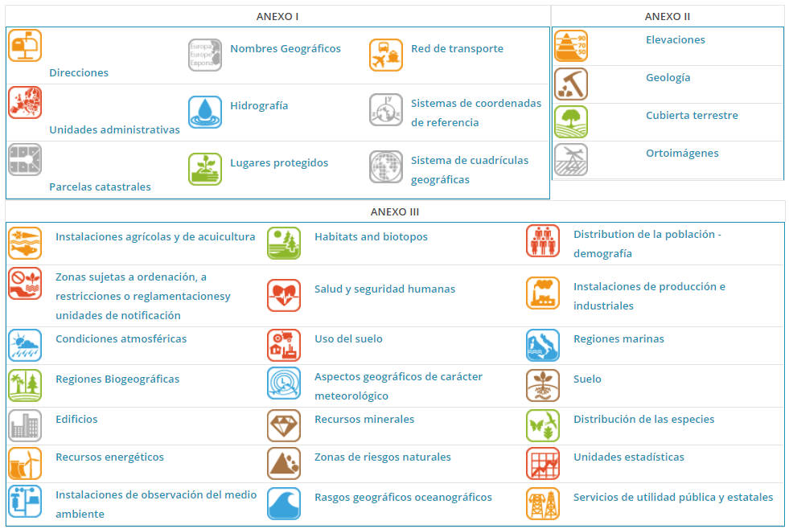
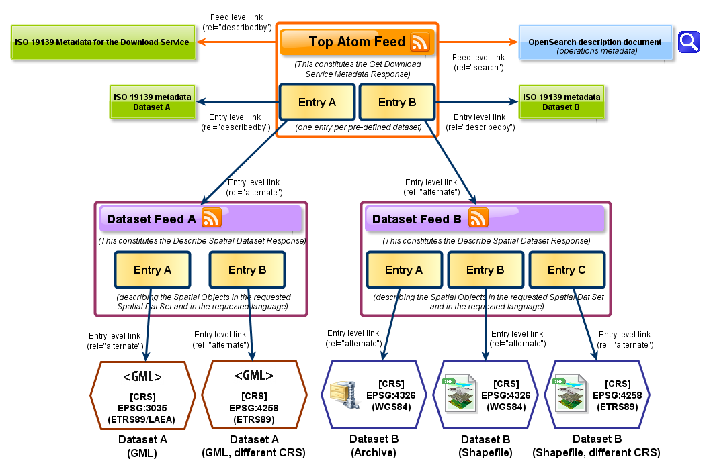

2 INSPIRE
La Directiva 2007/2/CE por la que se establece una Infraestructura de Información Espacial en la Comunidad Europea, también concida como INSPIRE, es una iniciativa legislativa de la UE que establece protocolos, estándares, aspectos de coordinación y organización, así como políticas de acceso, creación y mantenimiento de información espacial.
INSPIRE (INfrastructure for SPatial InfoRmation in Europe) [@inspire] tiene como objetivo proporcionar información geográfica de calidad, armonizada y relevante para respaldar la formulación, implementación, monitorización y evaluación de políticas comunitarias con impacto territorial. Esta directiva regula el acceso a información geográfica desde entidades públicas hacia el sector privado, promoviendo iniciativas de Infraestructuras de Datos Espaciales (IDE) y optimizando la difusión de información geográfica.
La Directiva INSPIRE exige la adopción de normas de aplicación comunes en diversas áreas específicas para garantizar la compatibilidad y usabilidad de las infraestructuras de datos espaciales de los Estados miembros dentro de un contexto comunitario y transfronterizo. Estas normas, desarrolladas como decisiones o reglamentos de la Comisión, son completamente vinculantes y abarcan aspectos como metadatos, especificaciones de datos, servicios de red, uso compartido de datos y servicios, servicios de datos espaciales, así como monitoreo y reporte. Además de estas normas de aplicación, existen documentos de Orientación Técnica que, aunque no son vinculantes, proporcionan detalles sobre la implementación y su relación con estándares, tecnologías y prácticas existentes.Para garantizar la compatibilidad e interoperabilidad de las infraestructuras de datos espaciales en la UE, INSPIRE establece Normas de Ejecución comunes (Implementing Rules) en las siguientes áreas:
- Metadatos
- Conjuntos de datos
- Servicios de red
- Servicios de datos espaciales
- Uso compartido de datos y servicios
- Seguimiento e informes
Estas normas son de obligado cumplimiento en todos los países miembros y su implementación se desarrolló en varias fases hasta 2021.
INSPIRE es el primer paso de una iniciativa multisectorial que inicialmente se centra en la información espacial para políticas medioambientales, pero se extiende a otras áreas como la agricultura y el transporte.
Europa enfrenta desafíos como la fragmentación de datos y fuentes, falta de armonización y duplicación de información. INSPIRE busca superar estos obstáculos mediante la creación de una infraestructura europea de datos espaciales que facilite el acceso y el uso interoperable de información geográfica.
2.1 Principios de INSPIRE
- Recogida eficiente de datos: Los datos deben recopilarse una sola vez y almacenarse en el nivel más adecuado.
- Interoperabilidad: La información geográfica debe combinarse sin problemas entre diferentes fuentes y estar disponible para usuarios y aplicaciones.
- Accesibilidad de datos: La información debe estar accesible a todos los niveles administrativos y sectores.
- Uso extensivo: La información geográfica debe ser abundante y sin restricciones de uso injustificadas.
- Facilidad de acceso: Debe ser sencillo descubrir qué información está disponible, evaluar su utilidad y conocer sus condiciones de uso.
- Claridad y documentación: Los datos geográficos deben estar bien documentados para facilitar su comprensión e interpretación.
2.2 Temas INSPIRE
Más información sobre los temas INSPIRE: - Índice de temas INSPIRE - Especificaciones de datos
 Temas anexos INSPIRE
2.3 Normas de aplicación
Para garantizar que las infraestructuras de datos espaciales de los Estados miembros fueran compatibles y utilizables en un contexto comunitario y transfronterizo, la Directiva INSPIRE requería la adopción de normas de aplicación comunes en diversas áreas específicas. Estas normas fueron establecidas como decisiones o reglamentos de la Comisión y son vinculantes en su totalidad. Entre los temas que abordan se encuentran:
- Metadatos
- Especificaciones de datos
- Servicios de red
- Uso compartido de datos y servicios
- Servicios de datos espaciales
- Monitoreo y reporte
Además de estas normas, existen documentos de Orientación Técnica, que aunque no son vinculantes, proporcionan detalles sobre su implementación y su relación con estándares, tecnologías y prácticas existentes.
2.4 Organización de los datos INSPIRE
La Unión Europea ha reclasificado parte de la información geográfica en una lista de datos de alto valor, con el objetivo de fomentar su reutilización. Esto está regulado por la Directiva (UE) 2019/1024 del Parlamento Europeo y del Consejo, relativa a los datos abiertos y la reutilización de la información del sector público.
La clasificación de estos datos se basa en su capacidad para:
- Generar beneficios socioeconómicos o medioambientales importantes y fomentar servicios innovadores.
- Beneficiar a un gran número de usuarios, especialmente pequeñas y medianas empresas (pymes).
- Contribuir a la generación de ingresos.
- Poder combinarse con otros conjuntos de datos.
Las principales categorías temáticas de datos de alto valor incluyen:
- Geoespacial: unidades administrativas, nombres geográficos, direcciones, parcelas catastrales, edificios, etc.
- Observación de la Tierra y Medio Ambiente: hidrografía, sitios protegidos, elevación, geología, cobertura terrestre, ortoimágenes, regiones biogeográficas, entre otros.
- Meteorológicos: datos de observación de estaciones meteorológicas, datos climáticos, alertas meteorológicas, datos de radares, etc.
- Estadísticas: producción industrial, índice de precios al productor industrial, entre otros.
- Sociedades y propiedad de las sociedades.
- Movilidad: redes de transporte.
Los conjuntos de datos de INSPIRE se estructuran en grupos temáticos, organizados en los siguientes anexos:
Este anexo incluye los conjuntos de datos espaciales esenciales para la localización y referencia en sistemas geoespaciales. Son datos básicos que permiten la integración con otros conjuntos de datos.
Temas incluidos:
- Sistemas de referencia de coordenadas: Definen la localización geográfica basada en coordenadas.
- Sistemas de cuadrículas geográficas: Estructuras para la organización de datos espaciales en cuadrículas.
- Nombres geográficos: Denominaciones oficiales de lugares geográficos.
- Unidades administrativas: Delimitaciones de territorios administrativos (países, regiones, municipios, etc.).
- Direcciones: Datos estructurados sobre direcciones postales y ubicaciones geográficas.
- Parcelas catastrales: Límites legales de propiedades y terrenos.
- Redes de transporte: Infraestructura vial, ferroviaria, marítima y aérea.
- Hidrografía: Información sobre cuerpos de agua, ríos, lagos y mares.
- Lugares protegidos: Zonas designadas para la conservación ambiental o patrimonial.
Datos geoespaciales para la modelización del territorio**. Este anexo cubre información topográfica y geológica que permite representar el relieve y la estructura del terreno.
Temas incluidos:
- Elevación: Modelos digitales del terreno y datos altimétricos.
- Cobertura terrestre: Clasificación del uso del suelo y características naturales.
- Ortoimágenes: Imágenes de satélite y fotografías aéreas georreferenciadas.
- Geología: Información sobre la composición del subsuelo y estructuras geológicas.
Datos temáticos especializados**. Incluye conjuntos de datos espaciales más detallados, utilizados en aplicaciones específicas como medio ambiente, servicios públicos y emergencias.
Temas incluidos:
Unidades estadísticas: Áreas geográficas utilizadas para análisis estadísticos.
Edificios: Información sobre estructuras y edificaciones.
Suelo: Características físicas y químicas del suelo.
Uso del suelo: Clasificación del territorio según su actividad (agricultura, urbano, forestal, etc.).
Salud y seguridad humanas: Datos sobre riesgos naturales y eventos que afectan la salud pública.
Servicios de utilidad pública y estatales: Infraestructuras esenciales como redes eléctricas y de saneamiento.
Instalaciones de observación y seguimiento del medio ambiente: Estaciones de medición de calidad del aire, agua y suelo.
Instalaciones de producción e industriales: Localización de industrias y fábricas.
Instalaciones agrícolas y de acuicultura: Áreas dedicadas a la producción agrícola y acuícola.
Distribución de la población y demografía: Datos espaciales sobre población y su distribución.
Zonas de gestión/restricción/regulación y unidades de notificación: Áreas con normativas especiales, como reservas naturales o zonas de exclusión.
Zonas de riesgo natural: Áreas propensas a desastres naturales como terremotos o inundaciones.
Condiciones atmosféricas: Información meteorológica en tiempo real.
Características geográficas meteorológicas: Datos climáticos a largo plazo.
Regiones biogeográficas: Delimitación de ecosistemas y hábitats naturales.
Hábitats y biotopos: Información sobre la biodiversidad y ecosistemas protegidos.
Distribución de especies: Datos sobre la ubicación de especies de flora y fauna.
Recursos energéticos: Localización de fuentes de energía renovable y no renovable.
Recursos minerales: Información sobre la distribución de minerales y recursos geológicos explotables.
2.5 Servicios de red
Los servicios de red de INSPIRE definen interfaces comunes para servicios web, como:
- Servicios de descubrimiento
- Servicios de visualización
- Servicios de descarga
- Servicios de transformación
- Servicios para invocar datos espaciales
A partir de estas interfaces, se pueden desarrollar aplicaciones cliente que permiten a los usuarios buscar, descargar o visualizar datos INSPIRE en mapas interactivos. Los geoportales acceden a estos servicios a través del bus de servicios de INSPIRE.
2.6 Intercambio de datos
Para que los datos sean utilizables libremente, es necesario que sean abiertos y posean una licencia pública. La interoperabilidad dentro de INSPIRE se define como:
“La posibilidad de combinación de los conjuntos de datos espaciales y de interacción de los servicios, sin intervención manual repetitiva, de forma que el resultado sea coherente y se aumente el valor añadido de los conjuntos y servicios de datos.”
En este sentido, la interoperabilidad de los datos espaciales está regulada por el Reglamento (UE) Nº 1089/2010, que establece las especificaciones técnicas necesarias.
2.7 ¿Dónde buscar los datos INSPIRE?
Los datos de INSPIRE pueden encontrarse en el Geoportal INSPIRE.
2.8 Referencias
Este contenido se basa en la información proporcionada por MappingGIS.
2.9 Calendario de implementación INSPIRE
Para garantizar la correcta implementación de INSPIRE, se estableció un calendario con diferentes fases que los Estados miembros debían cumplir.
2.9.1 Metadatos de datos y servicios conforme al Reglamento INSPIRE
Los Estados miembros debían asegurarse de que los metadatos de datos espaciales y servicios estuvieran disponibles y conformes con el reglamento:
2.9.2 Servicios de visualización y catálogo
El acceso a los datos mediante servicios de visualización y catálogo debía garantizarse a partir de estas fechas:
| Anexo I | Anexo II | Anexo III |
|---|---|---|
| 02/11/2011 | 09/11/2011 | 03/12/2013 |
2.9.3 Servicios de descarga y transformación (cuando sea necesario)
Los servicios que permiten la descarga y transformación de datos debían implementarse en:
| Anexo I | Anexo II | Anexo III |
|---|---|---|
| 28/12/2012 | 28/12/2012 | 03/12/2013 |
2.9.4 Cumplimiento de especificaciones INSPIRE para conjuntos de datos
Para garantizar la compatibilidad con las normas INSPIRE, los datos espaciales debían ajustarse a las especificaciones en los siguientes plazos:
Nuevos conjuntos de datos (producidos después del 8/12/2010):
| Anexo I | Anexo II | Anexo III |
|---|---|---|
| 23/11/2013 | 21/10/2015 | 21/10/2015 |
Conjuntos de datos existentes (producidos antes del 8/12/2010):
| Anexo I | Anexo II | Anexo III |
|---|---|---|
| 23/11/2017 | 21/10/2020 | 21/10/2020 |
Aunque los plazos han finalizado, aún queda trabajo por hacer para garantizar el cumplimiento total de la normativa.Para más detalles sobre el procedimiento en caso de incumplimiento: Informe sobre el alcance de la Directiva INSPIRE
2.10 Servicio de descargas INSPIRE
El servicio de descargas INSPIRE basado en ATOM permite la publicación de información mediante fuentes (feeds) en formato XML, facilitando la actualización y búsqueda de datos espaciales.
La guía técnica recomienda el uso del estándar OpenSearch para estructurar las operaciones de búsqueda de forma interoperable y compatible con los principales navegadores.
Para mejorar la organización y accesibilidad, se establecen dos niveles de acceso:
Nivel superior: Contiene los Dataset feeds con la lista de productos.
Nivel secundario: Contiene los enlaces de descarga de los conjuntos de datos.
2.10.1 Ventajas del servicio ATOM
Implementación más sencilla que los servicios WFS.
Menor consumo de recursos.
No requiere software especializado.
 Diagrama ejemplo servicio ATOM - Fuente: Comisión Europea, 2013 (Technical Guidance for the implementation of INSPIRE Download Services)1
2.10.2 Ejemplos de servicios ATOM
2.10.3 Herramientas relacionadas
3 LISIGE
En España la LISIGE se aplica a todos los datos geográficos que cumplan las siguientes condiciones
- Se refieran a una zona geográfica del territorio nacional, el mar territorial, la zona contigua, la plataforma continental y la zona exclusiva económica exclusiva, generada o bajo responsabilidad de las Administraciones públicas y sobre la que el Estado tenga jurisdicción
- Estén en formato electrónico
- Su producción y mantenimiento sea competencia de una Administración u organismo del sector público
- Se refieran a Información Geográfica de Referencia o a Datos Temáticos Fundamentales o a Datos Temáticos Generales existentes, salvaguardando en este caso los intereses prioritarios de la defensa nacional